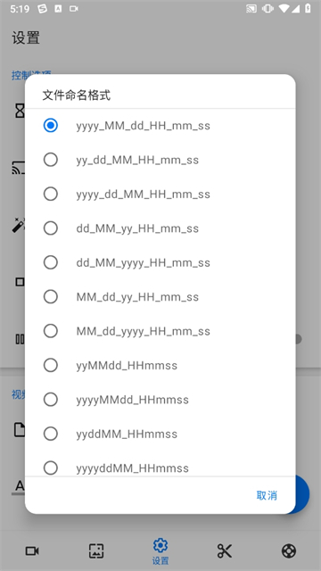

Screen Recorder 用了半年，我踩过的那些"以为要重装"的坑
从双重倒计时到 Facecam 挡画面，从标注画死到徽标忘关——这篇把 Screen Recorder 最容易翻车的几个真实坑挨个拆穿，附上防坑清单。
开头：看着简单，其实有几个坑
我第一次接触 Screen Recorder 是在它的官网上，安装包从screen recorder下载拿的，以为就是个点一下就录的玩意儿——悬浮窗、倒计时、画个圈，能有什么难的。结果头一个礼拜连续翻了好几次车，有两次差点删了重装。后来去screen recorder文档翻了翻才发现，这些坑文档里其实都写了，只是我没往心里去。
今天把这几个最典型的坑挨个说一遍，都是我实打实踩过的。知道了之后再用这个软件，基本不会再慌。

坑一：点一下开始，居然倒计时了两次
症状：点了开始录制，先跳出一个 3、2、1，数完之后又跳出一个 3、2、1——双重倒计时，等真正开始录的时候已经过了七八秒，游戏加载完了、要展示的界面切走了。
原因：Screen Recorder 自己开了延迟录制，手机系统的录屏也开了延迟。很多国产安卓系统（华为、小米、OPPO）自带的录屏功能默认就有 3 秒倒计时，你在 Screen Recorder 里又开了一个，两个叠在一起就翻倍了。
我第一次遇到这个情况时愣了三秒，以为软件卡 bug 了。
解法：只用一处延迟。要么关 Screen Recorder 里的延迟设置，要么去手机系统设置里把系统录屏的延迟关掉。我自己留 Screen Recorder 的——倒计时期间悬浮窗有大数字显示，看着更清楚。
坑二：实时标注画错了，擦不掉
症状：录教程时随手画了个红箭头，结果画歪了想擦掉——点了橡皮，箭头还在。以为是橡皮没生效，又重启软件重画，还是那样。
原因：这个坑是我自己理解错了。Screen Recorder 的实时标注不是"悬浮层"——你画的东西会直接烧进当前帧的画面里。橡皮擦只能擦掉你这次标注模式里还没退出的内容。一旦你退出了标注模式、或者已经录到了后面，再想擦之前画的东西就没辙了，因为视频文件已经生成了那几帧。
我当时以为标注是个可以随时关掉的透明层，没想到是直接画死在画面上。
解法：进入标注模式先练两笔再正式录。画错了立刻用橡皮擦掉再继续。如果已经退出了标注模式才发现画歪了，那就只能接受——或者重录。这不是 bug，就是这个功能的设计逻辑，和电脑上 OBS 的标注是两回事。
坑三：Facecam 小窗挡了关键内容，还调不了
症状：录完一期游戏解说，后期看素材发现 Facecam 小窗刚好挡在游戏的小地图上——观众看不到敌人位置。想把小窗移开，发现 Screen Recorder 里没法调，只能去电脑上用剪辑软件裁掉或者打马赛克。
原因：Facecam 的位置和大小只能在录制之前设好，录制过程中可以拖动缩放，但录完之后视频文件就定格了。软件本身没有后期调整 Facecam 位置的功能——它只管录，不管后期。
我那次录的是一期比较长的攻略视频，因为这个问题浪费了半小时在剪辑上。
解法：录之前就把 Facecam 小窗拖到一个永远不会挡主要操作区的位置——比如右上角或者左下角，避开你游戏里常用的按钮、小地图、血条这些区域。双指缩放到一个合适的大小，先预览确认一遍再开始录。如果录制中途发现挡了，立刻停录调整位置再重新开始，别硬着头皮录完整段。
坑四：徽标叠加忘了关，每段视频都带着
症状：做教程时开了文字徽标"XX 教程系列"，后来录个人反应视频忘了关——结果每段视频开头都挂着那个教程系列的水印，看着特别出戏。
原因：徽标叠加是全局设置，不是按单次录制生效的。你一旦在设置里打开并保存，之后每一次录制都会自动叠加这个徽标，直到你手动回去关掉。Screen Recorder 不会因为你换了个录制任务就自动切换徽标设置。
我当时翻了好几个录好的视频，发现有五六段都带了不该有的水印，删了重录的有三段。
解法：养成一个习惯——每次开始录制前，先扫一眼设置里的徽标开关。如果这次录的内容不需要水印，就确认关掉。图片徽标还好，文字徽标特别容易忘，因为它是纯文字，录制前预览时不太显眼。
坑五：Facecam 开了之后手机烫得能煎鸡蛋，还掉帧
症状：开 Facecam 录原神，十分钟后手机背面烫得吓人，画面开始掉帧——本来 60fps 的游戏录出来只有 20 多帧，看着像 PPT。
原因：Facecam 需要同时跑屏幕录制和摄像头采集，两路视频编码叠加在一起，CPU 负载比普通录屏高很多。游戏本身已经在占 GPU 资源，再叠一层 Facecam，中低端手机直接扛不住。掉帧是因为编码速度跟不上画面生成速度，只能丢帧。
我用的是骁龙 870 的手机，平时录游戏没问题，一开 Facecam 就扛不住。
解法：第一，边充边录——至少保证电量不掉、温控不强制降频。第二，把 Facecam 小窗缩小一点，小窗越小编码压力越低。第三，如果还是掉帧，考虑降低游戏画质或者关闭 Facecam——解说类视频其实可以后期把自己的反应单独录好再合成，不一定非要实时叠加。
防坑清单（速查）
- 延迟录制只开一处，系统和应用各开一个必双重倒计时
- 实时标注是"画死"不是悬浮层，画错了立刻擦，别等退出标注模式
- Facecam 小窗位置录前就定死，避开游戏操作区和关键 UI
- 徽标叠加是全局开关，每次录前确认一次要不要带
- Facecam 发热掉帧就边充边录、缩小小窗，实在不行后期合成
知道这些坑之后，Screen Recorder 其实相当省心——该有的功能都有，操作也直观，就是几个细节容易让人踩雷。用对了，录完直接就是成品，省掉后期剪辑的一半功夫。
这套资料在GitHub、Gitee、GitCode 三个仓库都能拿到，搜一下就能找到对应的文档目录，国内访问哪个顺手用哪个就行。